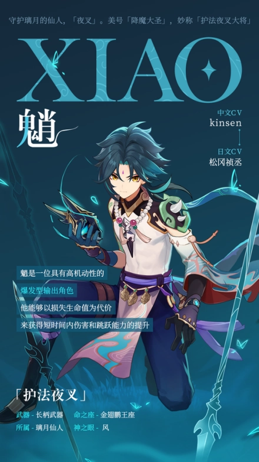
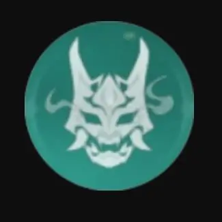

魈
(五星风系角色)魈，游戏《原神》中的5星风系角色，守护璃月港的“三眼五显仙人”之一，美号“降魔大圣”，妙称“护法夜叉大将”。
虽然魈外表看起来是一个少年人，但一些有关他的传说，已在古卷中流传千年。对望舒客栈中一道名为“杏仁豆腐”的菜颇为喜爱。究其原因，是因为“杏仁豆腐”的味道，与他曾经吞噬过的“美梦”十分相似。
角色背景
外表虽是少年人，魈的真实年纪却已超过两千岁。好在没有人单看外表就轻慢他，只要打过照面，任谁都能明白，他是个狠角色。危险、寡言。眼神锐利如刀。
在仙人之间，魈的辈分与声望堪称翘楚，但在人间，他的名望并不高。因为他既非招揽富贵、庇佑世人安康的福星，也非手握仙道，高居在绝云间的圣众。
能见到魈施展神通的人，必定是九死一生、身处险境之人。并非魈要加害于人，而是他始终在与足以吞没璃月万家灯火的黑暗战斗。普通人若是目击到战斗现场，难免会被殃及。当然，这并不是什么需要灭口的秘密啦。
角色故事其一魈究竟在与什么战斗？ 若要委婉地揭露真相，可以这样说:来自过去的怨憎、未能实现的大愿、失败者的嗟叹。直截了当的答案则是七神体系建立前，在“魔神战争”中惨败的魔神余下的残渣。 它们被摩拉克斯打败，镇压在坚岩磐石之下。但魔神均为不灭之体，意识虽会消散，力量与怨恨却遗留下来，化为淤积的秽物，反复侵扰众生。 “靖妖傩舞”——知晓真相的璃月攀权者们，将镇所经历的万千日夜归纳为这四个字。这些战斗没有胜利者，也没有尽头。这些战斗没有人能够见证，也没有人觉得感激。
角色故事其二“魈”并非是这位夜叉的真名，而是某人出于安全考量为他起的假名。曾经的魈年少无知，被魔神抓住弱点拘为座下大魔，听凭指示做下大量残忍血腥之事。 他造了诸多杀业，踩碎诸多理想，还被要求吞下败者的美梦，痛苦万分却又身不由己。终于，在魔神的战场上，岩之神摩拉克斯与夜叉的主人相会了。后世的历史，昭示着本次胜负的答案。“岩王帝君”解放了夜叉，并赐给他“魈”这一名字。 “在异邦的传奇故事中，魈之一字代表着遭遇苦难。饱受淬炼的鬼怪。你也经历诸多，以后就用这个名字吧。”
角色故事其三为报答岩之神的恩情，魈接下了守护璃月的千年苦役。为魔神效力的往事洗去了魈的温柔与无邪，如今，他心中只剩杀戮技巧与累世业障。 战斗，是他唯一还能为人们做的事。那有什么是人们能为他做的呢？普通人肯定不会有这般念头，光是远远看着，已被那股气势吓退。 不过若有人真心想报答他，倒是可以听听这则趣闻。支援魈进行降魔的七星特务，表面上经营着一家名叫“望舒”的客栈。魈偶尔会去客栈吃杏仁豆腐。看他吃东西的神情，应当是发自真心觉得喜欢。魈对甜甜的口味并不痴迷，可杏仁豆腐的口感，与曾经的“美梦”十分相似。
角色故事其四魈究竟在与什么战斗？ 依璃月当权者之见，他是在与魔神残渣引发的恶象战斗。可若直截了当地问他本人，未必能得到这一答案。 魈曾经被邪恶神明使役，历经苦难，直到岩王帝君出现，才得以重获自由。其神通本领乃是仙家翘楚，降妖除魔对他而言并无难度。 但魔神力量巨大，憎恨与执念也非常人可及。魈不断斩杀从它们残骸中滋生的秽物，那些憎恨便化为碎片，污染魈的精神。要消灭这种恨意，必须背负它们的“业障”。经年累月积累的业，足以灼心蚀骨。 魈却不感到憎恨。他的生命长达两千年，一切恩仇之于他，只是过眼云烟。
角色故事其五旅行者非常明白，魈在与威胁璃月千家万户的黑暗战斗，他在守护璃月。 那么有谁能守护他呢？曾有一次，彻夜战斗耗尽了魈的体力，他险些无法完成任务。荻花之海被激战刮倒了大半，魈拔出插在地上的枪头，踏上归途。 说是归途，却也没有所谓的归处可言，仅仅是离开战场而已。魈早已精疲力竭，身上沾染的魔神之怨，当即发作。无穷怨恨冲击着魈的心智，他痛苦地倒在荻花丛中。可也正是在那一刻，突如其来的痛苦毫无征兆地消失了。 并非魈自己压制住了邪念，而是一股笛声救了他。清丽的笛声，掠过碧水重山，被风送至此地。伴随拂晓第一缕晨光与远方惊起的鸟群，笛声趋于清晰。它守护着魈，安抚他躁动的心神，为他争取到片刻安宁。 是谁在演奏？魈虽然好奇，仍不愿深究，他心中已有了隐隐约约的答案。上一位有能力帮助他的，是君临尘世的七神之一。那么这一位，恐怕也是……
《空游饿鬼布施道法》须弥教令院的学者曾对璃月进行民俗研究，将结果写成一本名为《琉璃岩间国土纪行》的书，须弥、璃月各存一版。其中，璃月留存的版本更名为《匣中琉璃云间月》，删去了不少巫术、神秘的部分。 《空游饿鬼布施法》，则是仅存于须弥教令院馆藏的完整版之一节。文中提到，“仙众夜叉”虽有大神通大威德，仍为自身业障所困，间有大恐惧大痛苦之劫难，此乃空游饿鬼之苦，千万年不灭。文中列有多种安抚夜叉仙人的方法，包括食物供奉、妙音布施等等。如此为之，夜叉必会心生欢喜，甘愿为人守护平安。 仙中贵族夜叉擅长战斗，常以战将之姿亲赴战场。然而，近千年来战乱过多，使得夜叉一族几近灭亡。如今，璃月地区仍保有巨大的降魔夜叉破损造像，只是面容均已损毁殆尽。 顺带一提，须弥学者文笔诘屈聱牙，书中内容又过分艰深，导致《匣中琉璃云间月》的人气完全无法匹敌《提瓦特浏览指南》与艾尔·马斯克所著的各国人文风土志略。
神之眼仙人全称是“三眼五显仙人”。“三眼”所指，正是天生双目之外的“神之眼”。那么仙人获眼与世人被天空岛垂青，究竟是否遵循着同种道理？ 魈已记不清得到神之眼的时刻了。对人类来说，这理应是终身难忘的瞬间。对他而言，却只是日后无穷战斗的开始。真正令魈难忘的，则是另一种时刻。人世节日多为庆典，只是鲜少有人记得节日背后的故事。 这些日子，大多数是吃人怪物被圣众降服之日。人们模仿其作为，举行驱逐妖怪的仪式以纪念英雄事迹，如此习俗，逐渐演变为欢庆的节日。 璃月各地遭摩拉克斯镇压的魔神，在半梦半醒之间，偶尔会爆发出规模异常的怨憎与残渣。其中，以海灯节之夜的爆发最为巨大。 魈受命进行“靖妖傩舞”，于海灯节当晚彻夜厮杀。因此，他尤为厌恶海灯节。魈并不觉得战斗艰险。因他的努力，璃月港最终保住了平安。人们点起海灯，赐福的灯光照亮夜空与近海。 如此时刻，魈心中也有一股特别的情感随之升起。寂寞？安心？抑或是，对未来的恐惧？少年身姿的仙人扪心自问，却得不出答案。
能力设定(部分)
天赋| 名称 | 描述 |
|---|---|
|
卷积微尘
|
普通攻击：进行至多六段的连续枪击。 重击：消耗一定体力，进行上挑攻击。 重击体力消耗：25.0点 下落攻击：从空中下坠冲击地面，攻击下落路径上的敌人，并在落地时造成范围伤害。魈进行下落攻击时，不会承受坠落伤害。 |
|
风轮两立
|
种类：元素战技 疾速突进，对路径上的敌人造成风元素伤害。可以在空中施放。初始拥有2次可使用次数。 冷却时间：10秒 |
|
靖妖傩舞
|
种类：元素爆发 展现数千年前令神魔精妖睹之胆颤的夜叉傩面。 夜叉傩面：大幅提升魈的跳跃能力，提高攻击范围与攻击伤害，将攻击伤害转为风元素伤害，该元素转化无法被附魔覆盖。在此状态下，魈会持续损失生命值。效果将在魈退场时解除。 持续时间：15秒 元素能量：70 冷却时间：18秒 |
|
降魔·平妖大圣
|
种类：固有天赋 在靖妖傩舞状态下，魈造成的所有伤害提高5%。此后，在技能持续时间内，每经过3秒，造成的伤害再额外提高5%。至多获得25%伤害加成。 |
|
坏劫·国土碾尘
|
种类：固有天赋 施放风轮两立会使之后7秒内的风轮两立造成的伤害提高15%。该效果持续7秒，最多叠加3次，叠加时刷新持续时间。 |
|
神通·空中自在法
|
种类：固有天赋 队伍中自己的角色攀爬消耗的体力降低20%。无法与效果完全相同的固有天赋叠加。 |